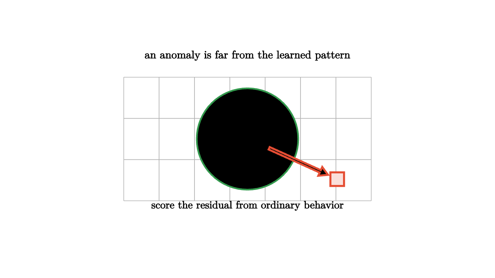

A factory sensor hums along with small daily variation. One morning the vibration jumps. A credit card usually buys groceries near home, then suddenly buys electronics across the country. A server usually sends a steady stream of requests, then produces a burst at midnight. Anomaly detection begins with a pattern and asks when an observation breaks it.
The simplest anomaly score is distance from a center. If the data cloud has mean $\mu$ and standard deviation $\sigma$ in one dimension, the z-score
measures how unusual a value is relative to the usual spread. In several dimensions, covariance matters. The Mahalanobis distance
stretches space by the natural variation of the data.

source
let soft = |col, amount| lerp(WHITE, col, amount)
mesh scene = [
center{1.35u} Text("an anomaly is far from the learned pattern", 0.64),
stroke{LIGHT_GRAY, 1} LineGrid([-2, 2, 8], [-1, 1, 4], 1),
center{0.65l + 0.2u} fill{soft(BLUE, 0.2)} stroke{BLUE, 2} Circle(0.09),
center{0.2l + 0.05u} fill{soft(BLUE, 0.2)} stroke{BLUE, 2} Circle(0.09),
center{0.15r + 0.15d} fill{soft(BLUE, 0.2)} stroke{BLUE, 2} Circle(0.09),
center{0.5r + 0.22u} fill{soft(BLUE, 0.2)} stroke{BLUE, 2} Circle(0.09),
center{0.05r + 0.42u} fill{soft(BLUE, 0.2)} stroke{BLUE, 2} Circle(0.09),
stroke{GREEN, 2.5} Circle(0.82),
center{1.45r + 0.65d} fill{soft(RED, 0.18)} stroke{RED, 3} Square(0.22),
stroke{RED, 3} Arrow(0.35r + 0.15d, 1.3r + 0.58d),
center{1.08d} Text("score the residual from ordinary behavior", 0.62)
]Distance is only one view. If normal data lies near a low-dimensional line or surface, the residual from that surface can be a better score than distance from the mean. If normal data forms several clusters, distance to the nearest prototype may work better. If normal data has dense and sparse regions, a density score may be more appropriate.
source
let soft = |col, amount| lerp(WHITE, col, amount)
"Center Model"
mesh scene = [
center{1.3u} Text("start with a model of ordinary variation", 0.62),
center{0r} fill{soft(BLUE, 0.12)} stroke{BLUE, 2} Circle(0.75),
center{0r} fill{WHITE} stroke{BLUE, 3} Circle(0.09),
center{1.1d} Text("mean and spread create a first alarm rule", 0.62)
]
play Fade(0.8)
"Residual Model"
scene = [
center{1.3u} Text("a low-rank model catches off-pattern residuals", 0.62),
stroke{GREEN, 3} Line(1.4l + 0.55d, 1.2r + 0.55u),
center{0.55r + 0.65u} fill{soft(RED, 0.2)} stroke{RED, 3} Square(0.22),
stroke{RED, 3} Line(0.55r + 0.65u, 0.35r + 0.25u),
center{1.1d} Tex("\\|x-\\hat{x}\\|", 0.7)
]
play Trans(0.9)
"Threshold"
scene = [
center{1.3u} Text("a threshold trades misses against false alarms", 0.62),
stroke{LIGHT_GRAY, 1} Line(1.5l + 0.75d, 1.5r + 0.75d),
stroke{BLUE, 3} ExplicitFunc(|x| 0.55 * exp(-x * x) - 0.55, [-1.5, 1.5, 100]),
stroke{RED, 3} Line(0.85r + 0.75d, 0.85r + 0.55u)
]
play Trans(0.8)The threshold is a practical decision, not a theorem delivered by the score alone. A hospital monitor may tolerate more false alarms to avoid missing a dangerous event. A fraud system may avoid blocking too many legitimate purchases. The mathematics provides a score; the application decides the cost of mistakes.
Time adds another layer. A value can be ordinary by itself and strange in sequence. A temperature reading of 70 degrees is ordinary in spring, suspicious in a freezer, and alarming if it follows a rapid climb. Change-point methods look for broken continuity in a stream. Forecasting methods score the gap between predicted and observed values.
Anomaly detection also has a feedback problem. Once a system flags unusual examples, people may investigate and label them. Those labels can improve the model, but they can also bias the future training set toward what the old detector already noticed. Good anomaly work keeps examples of false alarms and missed events, because those are the places where the definition of ordinary needs revision.
The central lesson is that anomalies are defined relative to a pattern. A point is unusual because it is far from a center, far from a subspace, in a low-density region, inconsistent with a graph neighborhood, or surprising in time. The word "anomaly" sounds absolute. The math makes it conditional: unusual according to this model, this data, and this chosen cost of error.